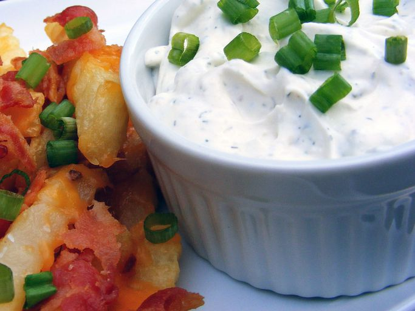

Home
Homemade Ranch Dressing

Skip the store-bought stuff and make your own ranch at home! Our best ranch dressing recipe is incredibly easy to make with ingredients you likely already have in your kitchen.
Ingredients
- 1 cup mayonnaise
- ½ cup sour cream
- ½ teaspoon dried chives
- ½ teaspoon dried dill weed
- ¼ teaspoon garlic powder
- ¼ teaspoon onion powder
- ⅛ teaspoon salt
- ⅛ teaspoon ground black pepper
Steps
- Gather all ingredients.
- Whisk mayonnaise, sour cream, chives, parsley, dill, garlic powder, onion powder, salt, and pepper together in a large bowl until well-combined.
- Cover and refrigerate for 30 minutes before serving.